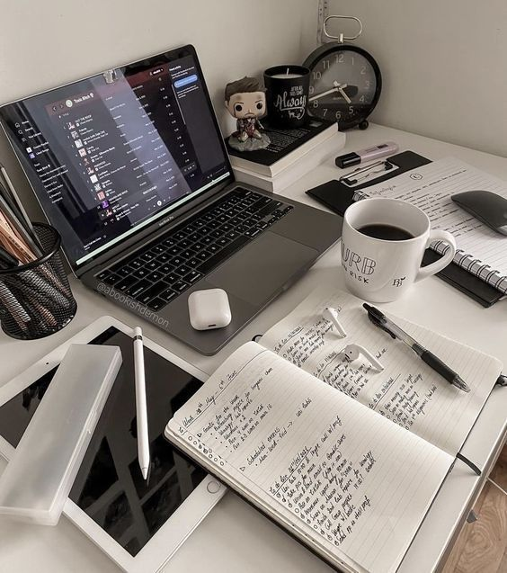
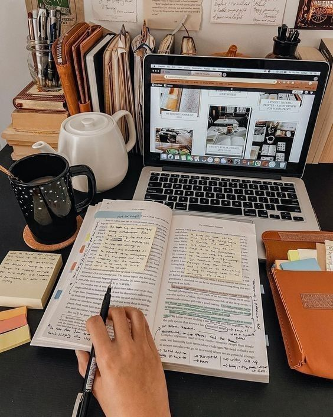

En esta sección encontrarás tips y recomendaciones para mejorar tu rendimiento académico y optimizar tu proceso de aprendizaje. Desde técnicas de memorización hasta consejos para organizar tu tiempo de estudio, aquí podrás descubrir todo lo necesario para potenciar tu desempeño académico y alcanzar tus objetivos educativos con éxito. ¡Explora y empieza a mejorar tus técnicas de estudio hoy mismo!


Te voy a hablar de 10 técnicas de estudio las cuales considero que son más conocidas:
1. Técnica Pomodoro
Esta técnica ayuda a mantener la concentración y evitar el agotamiento. Consiste en estudiar durante 25 minutos y luego tomar un descanso de 5 minutos. Después de cuatro sesiones de 25 minutos, tomas un descanso más largo de 15-30 minutos.
Divide el tiempo en intervalos productivos (25 minutos de estudio y 5 minutos de descanso).
Asegúrate de tomar descansos largos cada 2 horas.
2. Método de Feynman
Este método te ayuda a entender profundamente un concepto al intentar explicarlo de manera sencilla, como si estuvieras enseñando a alguien más.
Elige un tema que quieras aprender.
Escribe una explicación sencilla y clara del tema.
Si te atascas, vuelve al material de estudio y repite el proceso.
3. Resúmenes y Mapas Mentales
Escribir resúmenes de lo que estás aprendiendo y crear mapas mentales te ayudará a organizar tus ideas y a visualizar la relación entre los conceptos.
Escribe resúmenes en tus propias palabras.
Crea mapas mentales para conectar ideas y facilitar la comprensión.
4. Técnicas de Mnemotecnia
Las mnemotecnias te ayudan a recordar información mediante trucos como acrónimos, rimas o frases clave.
Crea acrónimos para recordar listas o términos clave.
Usa rimas o frases graciosas para recordar conceptos difíciles.
5. Repetición Espaciada
Revisa el material en intervalos de tiempo cada vez más largos. Esta técnica mejora la retención a largo plazo de la información.
Repasa el contenido después de unas horas, luego un día, luego una semana, etc.
Utiliza apps de repetición espaciada como Anki para organizar los repasos.
6. Estudio Activo
Este enfoque te obliga a interactuar activamente con el material de estudio, en lugar de simplemente leerlo pasivamente.
Haz preguntas sobre el contenido mientras estudias.
Realiza ejercicios y práctica lo aprendido.
Explica los conceptos a otros para afianzar tu comprensión.
7. Técnica SQ3R
SQ3R es una técnica estructurada de lectura que te ayuda a comprender y recordar mejor el material.
Survey (Previsualiza el contenido).
Question (Haz preguntas antes de leer).
Read (Lee el contenido con atención).
Recite (Repite lo que has aprendido de memoria).
Review (Repasa el material después de un tiempo).
8. Organización del Espacio de Estudio
Un espacio de estudio ordenado y libre de distracciones puede mejorar enormemente tu productividad.
Encuentra un lugar tranquilo y libre de interrupciones.
Asegúrate de que tu área esté bien iluminada y organizada.
9. Autoevaluación
Realizar exámenes o preguntas sobre el tema te ayudará a medir lo que has aprendido y a identificar áreas que necesiten repaso.
Crea pruebas o cuestionarios sobre lo que has estudiado.
Repasa los conceptos que no has dominado.
10. Estudio en Grupo
Estudiar en grupo puede ser útil para intercambiar ideas, aclarar dudas y explicarse mutuamente conceptos difíciles.
Elige un grupo de estudio pequeño y enfocado.
Asegúrate de que el grupo no se convierta en una distracción.
¡Espero que estas técnicas te sean de ayuda! En mi experiencia personal yo utilizo el método Pomodoro un poco modificado, utilizo el mismo método pero con tiempos de 50-10, pero si te cuesta estar tanto tiempo, podes arrancar con menos, también puede ayudarte utilizar música de fondo, o probar un ambiente distinto, pero de eso voy a hablarte en el apartado de Recomendaciones ¡Éxitos en tus estudios!